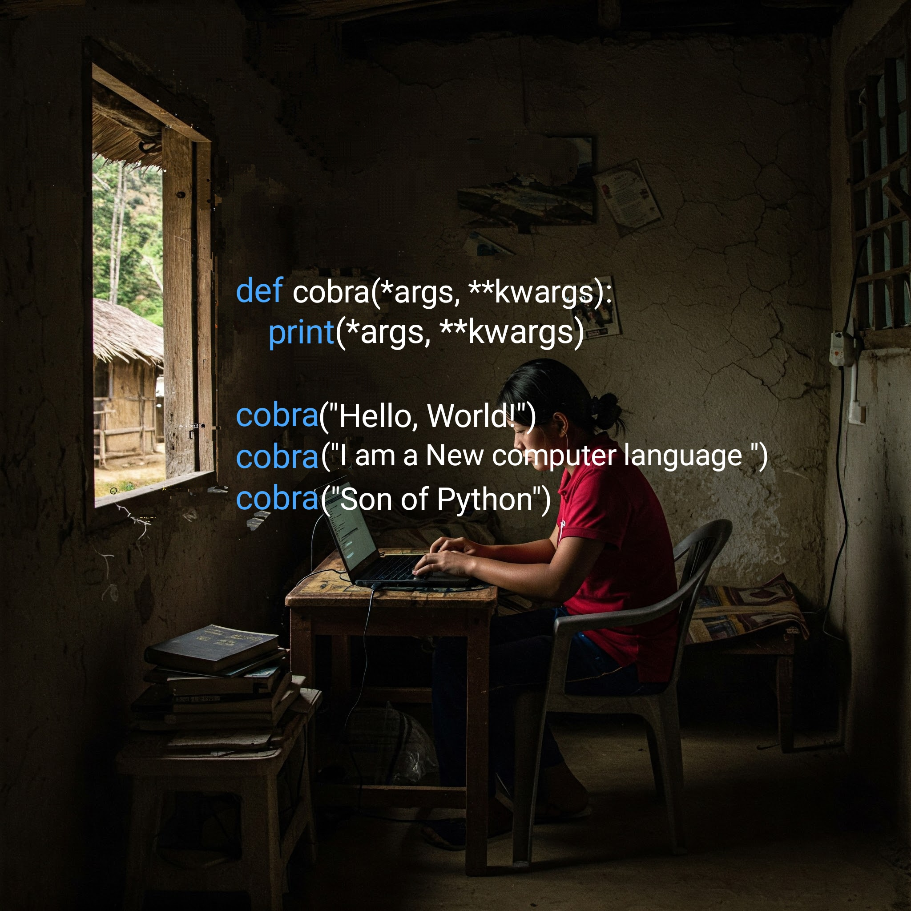
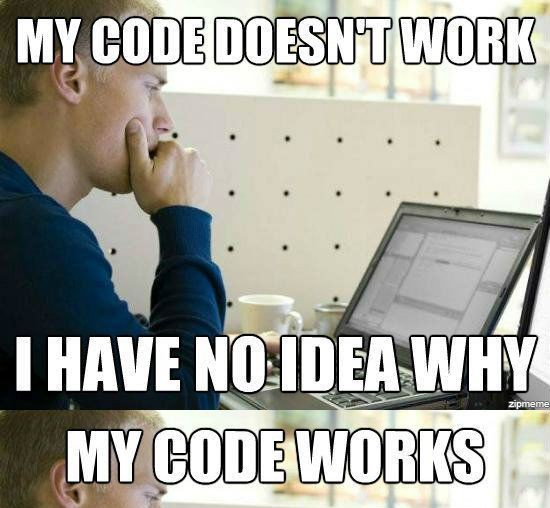

Click to connect and start your journey to learn coding with us!
What is coding?
Coding is the process of writing instructions, using specific programming languages, that a computer can understand and execute. These instructions are used to create software applications, build websites, automate tasks, and power countless other technologies we use every day, including mobile apps and many more.
Coding in Nagaland
For most people in Nagaland, coding is a pretty new idea, and it's not something you see or hear about every day. It's not yet a common skill that many people have learned. But even though it's new, I'm pretty sure that there are some people right here in Nagaland who are already very skilled at coding and know a lot about it.
When you're learning to code or working on coding projects, you'll find that sometimes it can be really frustrating. You might get stuck on a problem for a long time. But then, when you finally figure it out and your code works, it feels really good and rewarding. Because it can be tough sometimes, it's really helpful to have a Friend,Companion, or Environment of people who is also interested in coding.
This way, you can share what you're learning, talk about the problems you're facing, and celebrate your successes together. Having someone to share this journey with can make it much easier and more enjoyable.
Hence I'm trying to built a common platform do keep our coding alive and draw new coders.
Challenges For The Coders
It's not always easy to be a coder in Nagaland right now. One of the big problems is that sometimes the technology we need isn't as good or as easily available as in other places. Also, not everyone around us might really understand what coding is or why it's important. This can make things a bit difficult for people who are excited about programming.
Because of these challenges, coders here might sometimes feel like they are working alone and that there aren't many others who share their passion. But we recognize this need for connection and support, and we want to do something about it. We are creating a place where we can all come together to deal with these problems directly. We plan to share helpful learning materials, work through technical issues as a team, and give each other the motivation we need to grow and succeed in coding.

If we come together as a community, we can change how people in Nagaland think about coding. We can build a place where coders feel supported, have access to better technology, and can really thrive. By working together, we can make a big difference and create a stronger future for coding here.
Why Coding Matters
Opens Doors to Innovation: Coding is the foundation for creating new technologies and solving problems in creative ways.
Boosts Problem-Solving Skills: Learning to code helps develop logical thinking and the ability to break down complex issues.
Drives Economic Growth: The tech industry is expanding rapidly, creating numerous job opportunities for coders.
Enhances Creativity: Coding allows you to bring your ideas to life by building websites, apps, and more.
Improves Understanding of Technology: In an increasingly digital world, coding provides valuable insights into how things work.
The Significance of Coding
Fuels Technological Advancement: Almost every modern convenience relies on code, from smartphones to medical devices.
Develops Computational Thinking: Coding teaches you how to think logically, systematically, and efficiently.
Creates Career Opportunities: Coders are in high demand across various sectors, offering promising career paths.
Empowers Digital Literacy: Understanding code is becoming as essential as reading and writing in today's society.
Facilitates Automation: Coding allows us to automate repetitive tasks, increasing efficiency and productivity.
Supports Data Analysis: Coding skills are crucial for analyzing large datasets and extracting valuable insights.
Fosters Global Collaboration: Many coding projects involve teams working together across geographical boundaries.
Why Learning to Code is Important
It's the language of technology that shapes our modern world.
Coding skills are increasingly sought after by employers in diverse industries.
It empowers you to become a creator of technology, not just a consumer.
Learning to code strengthens your logical reasoning and problem-solving abilities.
It provides a deeper understanding of the digital tools we use every day.
Coding can lead to exciting and well-paying career opportunities.
It fosters innovation and the development of new solutions to existing problems.
It encourages creativity and allows you to express ideas in digital forms.
Understanding code is becoming a fundamental skill in the 21st century.
It can open doors to entrepreneurship and the creation of your own tech ventures.
Skills Needed to Code
Problem-Solving
Logical Thinking
Attention to Detail
Learning Agility
Patience
Basic Computer Skills
Text Editor Familiarity
Understanding of Data Structures (basic)
Algorithm Basics (basic)
Communication (for collaboration)
Popular Coding Languages and Their Uses
Python: Web development (backend), data analysis and machine learning, scripting and automation.
JavaScript: Frontend web development (interactive), backend (Node.js), mobile apps (React Native).
Java: Enterprise applications, Android development, large systems.
C++: System software, game development, performance-critical apps.
HTML: Structure of web pages, defines elements, foundation for websites.
CSS: Styles web page appearance, layout, colors, fonts.
SQL: Manages relational databases, data retrieval and manipulation, essential for data-driven apps.
Swift: Apple platform apps (iOS, macOS), modern and safe, performance-focused.
Kotlin: Android app development, concise and expressive, Java interoperable.
PHP: Backend web development, powers many websites, often used with databases.
Hope now you migth have Questions!!
Ever wanted to make your own website or how they function?
Intrigued by the technology behind your favorite mobile apps and how they're built?
Do you have a problem you think technology could solve, and want to learn how to create that solution?
Looking to connect with other coders and chat out instead of tangling with un-interested individual drinking around?
Ready to unlock a new set of skills that are increasingly valuable in today's digital world?
JOIN Now To Get
Daily Challenges
Practice and improve coding skills.
Resources Sharing
Stay updated with latest trends and technologies.

Code Review & Feedback
Improve coding skills and grow as developers.
Project Collaboration
Work together on projects and build something amazing.
Jobs Alerts
Get alerts on Jobs vacancy and Freelances
Career Guidance
Get advice and guidance on career paths and professional development.
"Coding all alone, is not coding"
Join my what's App community by
clicking here
Help me by following me on other social media
You can get high paying jobs
Freelancer in tech
Web developer,Builds websites,apps, and software and Works remotely, flexible hours
Software Developer
A software programmer designs, codes, tests, and maintains software programs for a wide range of industries and applications.
Web developer
A web developer builds and maintains websites, applications, and other online platforms using coding languages like HTML, CSS, JavaScript, and more.
Full stack Developer
A full stack developer handles both front-end and back-end web development using advance computer languages like python etc
Many More Like:
Cybersecurity,Mobile App developer,DevOps Engineer,Data scientist etc.